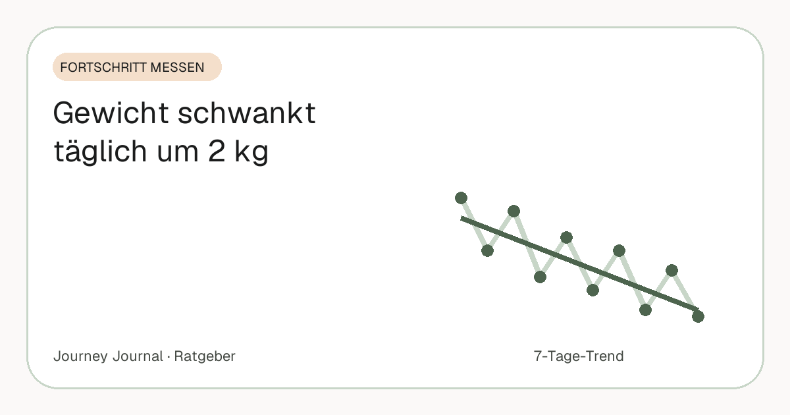

Ratgeber · Fortschritt messen · 5 Min. Lesezeit
Dein Gewicht schwankt täglich um 2 Kilo – das steckt dahinter
Gestern 91,2 – heute 92,9 – morgen 90,8. Wer so etwas erlebt, glaubt schnell, etwas falsch zu machen. Fast immer ist es nur Wasser. Dieser Artikel erklärt die sechs Ursachen, warum sie mit Fettabbau nichts zu tun haben, und wie du die Waage so liest, dass sie dich nicht mehr verrückt macht. Wie oft du überhaupt auf die Waage solltest, klärt ein eigener Artikel mit Studienlage.

Teil unseres Guides: Progress-Fotos: Der komplette Guide – Aufnahme, Rhythmus, Vergleich, Speicherung
Kurz gesagt
- 1–2 kg Schwankung pro Tag sind normal und bestehen fast vollständig aus Wasser, Glykogen und Darminhalt – nicht aus Fett.
- Fett verändert sich in Wochen, nicht über Nacht. Ein Kilo Körperfett lässt sich an einem Tag weder aufbauen noch verlieren.
- Die sechs Ursachen: Salz, Kohlenhydrate, Verdauung, Training, Zyklus, Uhrzeit.
- Lesen statt reagieren: gleiche Bedingungen, Wochendurchschnitt, Trend über drei Wochen.
- Ein Foto der Waage statt der Zahl im Kopf nimmt dem Einzelwert seine Macht.
Warum zwei Kilo an einem Tag kein Fett sein können
Ein Kilogramm Körperfett entspricht grob 7.000 Kilokalorien – eine gängige Faustregel, die als Näherung taugt, auch wenn der tatsächliche Wert je nach Person variiert. Um ein Kilo Fett an einem Tag zu verlieren, müsste das Defizit also bei 7.000 Kilokalorien liegen, deutlich mehr, als die meisten Menschen überhaupt an einem Tag verbrauchen. Umgekehrt gilt dasselbe: Ein Abend mit Pizza macht kein Kilo Fett, auch wenn die Waage am Morgen so tut.
Was sich dagegen über Nacht um ein bis zwei Kilo ändern kann, ist alles, was der Körper an Wasser bindet oder im Verdauungstrakt trägt. Genau das zeigt die Waage – und sie unterscheidet nicht zwischen beidem.
1. Salz bindet Wasser
Natrium hält Wasser im Körper. Ein salziges Abendessen – Fertiggericht, Restaurant, Chips – kann am nächsten Morgen ein Plus von einem Kilo oder mehr bedeuten, das in den folgenden ein, zwei Tagen wieder verschwindet. Kein Gramm davon ist Fett. Wer am Tag nach dem Restaurantbesuch erschrickt, vergleicht Wasser mit Wasser.
2. Kohlenhydrate und Glykogen
Kohlenhydrate werden in Muskeln und Leber als Glykogen gespeichert, und Glykogen bindet ein Vielfaches seines Gewichts an Wasser – als Faustregel wird oft das Dreifache genannt. Ein kohlenhydratreicher Tag füllt die Speicher und bringt kurzfristig ein bis zwei Kilo; eine Woche Low-Carb leert sie und lässt die Waage genauso schnell fallen. Beides ist Wasser.
Dieser Effekt erklärt auch die erste Diätwoche: Die Waage fällt steil, weil Glykogen und Wasser gehen – und bremst danach, obwohl der Fettabbau gerade erst richtig beginnt. Was danach realistisch ist, rechnet ein eigener Artikel vor.
3. Verdauung
Was du gestern gegessen hast, ist heute noch nicht vollständig verdaut. Der Darminhalt wiegt – je nach Mahlzeit und Ballaststoffen – mehrere hundert Gramm bis über ein Kilo, und der Zeitpunkt der Messung macht den Unterschied: vor oder nach der Toilette, nach einem ballaststoffreichen Tag oder einem leichten. Das ist der banalste Grund für Schwankungen und der am meisten unterschätzte.
4. Training
Nach intensivem Training, vor allem nach Krafttraining mit ungewohnten Reizen, lagert der Muskel vorübergehend Wasser ein – ein Teil der Regeneration. Ein Plus auf der Waage am Tag nach dem Training ist deshalb normal und sogar ein gutes Zeichen. Wer nach dem ersten Trainingsmonat „zunimmt“, obwohl die Hose lockerer sitzt, erlebt genau das: Das Maßband sieht, was die Waage verschweigt.
5. Zyklus
Hormonelle Schwankungen im Zyklus können über mehrere Tage ein bis zwei Kilo Wassereinlagerung bedeuten, meist in der zweiten Zyklushälfte und um die Menstruation. Wer das nicht einplant, sieht einmal im Monat ein Plateau oder einen Anstieg, der nichts mit dem Verhalten zu tun hat. Hilfreich ist, Wochen nicht nur untereinander, sondern mit derselben Zyklusphase des Vormonats zu vergleichen.
6. Uhrzeit
Über den Tag nimmst du Flüssigkeit und Nahrung auf und gibst beides wieder ab. Morgens nüchtern, nach der Toilette und vor dem Frühstück ist deshalb der einzige wirklich vergleichbare Zeitpunkt. Ein Abendwert gegen einen Morgenwert ist ein Vergleich von Äpfeln mit Birnen – und der häufigste Grund für scheinbare Zwei-Kilo-Sprünge.
So liest du die Waage richtig
Gleiche Uhrzeit, gleiche Bedingungen, gleiche Waage – und dann nicht der Einzelwert, sondern der Durchschnitt von sieben Tagen. Fällt dieser Durchschnitt von Woche zu Woche, nimmst du ab, egal was einzelne Morgen sagen. Die systematische Übersicht von Zheng und Kollegen (2015) fasst zusammen, dass regelmäßiges Wiegen mit besseren Ergebnissen verbunden ist und in den ausgewerteten Studien keine negativen psychischen Folgen zeigte – vorausgesetzt, man liest den Trend und nicht den Tag.
Bleibt der Wochendurchschnitt drei Wochen lang gleich, ist es kein Rauschen mehr, sondern ein echtes Plateau – das hat eigene Ursachen und eigene Lösungen. Hall und Kahan (2018) beschreiben, wie der Körper beim Abnehmen Verbrauch und Appetit anpasst; das ist der Hintergrund, warum es nach einigen Wochen langsamer wird, und hat mit Tagesschwankungen nichts zu tun.
Ein praktischer Trick: Fotografiere die Waage, statt dir die Zahl zu merken. Die Zahl wird zum Datenpunkt in einer Reihe und verliert ihre Macht über den Tag. Wer sich stattdessen jeden Morgen bewertet, lässt Wasser über seine Stimmung entscheiden.
Was die Waage nicht sieht – und was es stattdessen zeigt
Die Waage misst Masse. Sie sieht nicht, ob die Masse Fett, Muskel, Wasser oder Darminhalt ist. Deshalb lohnt es sich, sie nicht allein zu lassen: Das Maßband zeigt Form statt Masse und ist von Wasser deutlich weniger beeindruckt; vergleichbare Fotos zeigen die Summe aus allem. Wie sich die vier Methoden ergänzen, steht im Vergleichsartikel.
Häufige Fragen
Wie viel Gewichtsschwankung pro Tag ist normal?
Ein bis zwei Kilo sind völlig normal, bei größeren Menschen, nach salzigem Essen oder nach Training auch mehr. Das ist Wasser, Glykogen und Darminhalt, kein Fett.
Wann ist die beste Zeit zum Wiegen?
Morgens direkt nach dem Aufstehen, nach der Toilette, vor dem Frühstück – und immer zur gleichen Zeit auf derselben Waage.
Warum habe ich nach dem Training zugenommen?
Der Muskel lagert nach ungewohnter Belastung vorübergehend Wasser ein. Das Plus verschwindet in ein paar Tagen und ist kein Fett.
Warum zeigt die Waage in der ersten Diätwoche so viel weniger?
Weil Glykogenspeicher und das daran gebundene Wasser gehen. Das ist ein einmaliger Effekt; der Fettabbau danach ist langsamer, aber echt.
Ab wann ist ein Stillstand kein Rauschen mehr?
Wenn der Sieben-Tage-Durchschnitt etwa drei Wochen lang gleich bleibt. Dann lohnt sich der Blick auf die Ursachen eines Plateaus.
Quellen
- Zheng Y. et al. (2015): Self-weighing in weight management: A systematic literature review. Obesity 23(2) – Regelmäßiges Wiegen, Wochentrend, keine psychischen Nachteile
- Hall K. D., Kahan S. (2018): Maintenance of Lost Weight and Long-Term Management of Obesity. Med Clin North Am 102(1) – Anpassung von Verbrauch und Appetit beim Abnehmen
- NHS: Losing weight – Getting started (12-week plan) – Empfohlenes Tempo 0,5–1 kg pro Woche
Dieser Artikel ersetzt keine ärztliche Beratung. Bei einer größeren Gewichtsreduktion ist eine medizinische Begleitung sinnvoll.